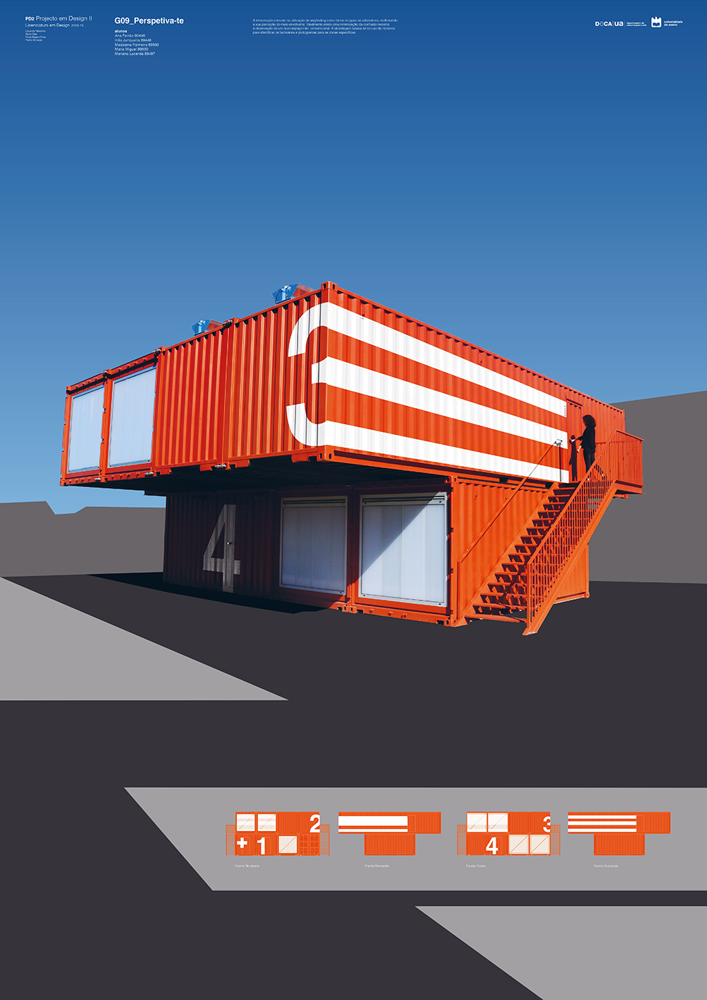

Perspetiva-te
Este projeto consiste na decoração exterior de um contentor situado na Univeridade de Aveiro. O objetivo era identificar cada balneário com números, para transmitir universalidade e, criamos uma continuação dos números ao longo do contentor de forma a que as pessoas conseguissem ver o número de maneiras diferentes através de várias perspetivas diferentes.